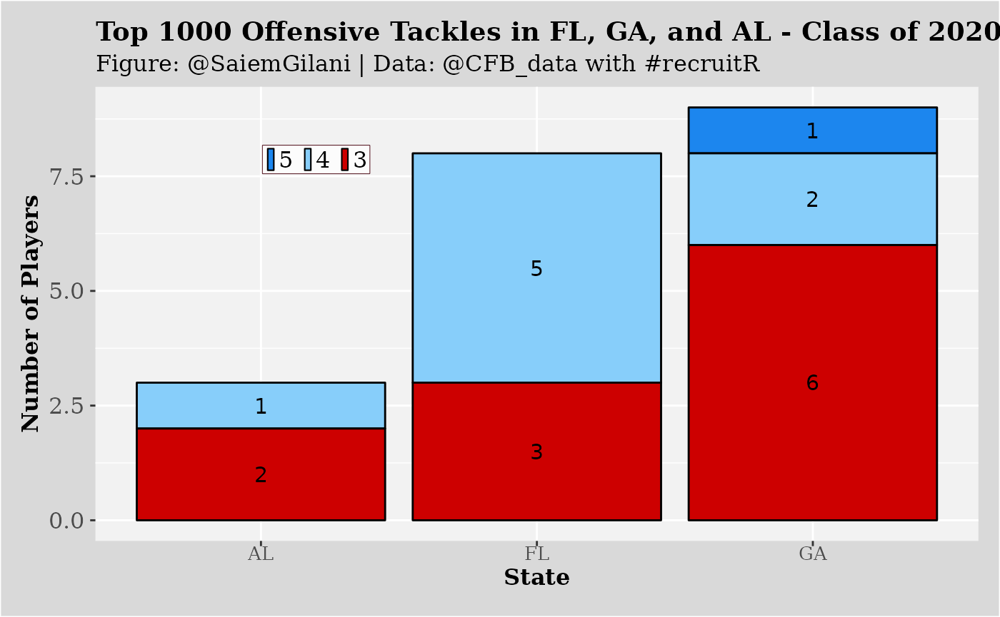

Offensive Tackle Example
This is a basic example which shows you how to solve a common problem:
if (!requireNamespace('pacman', quietly = TRUE)){
install.packages('pacman')
}
pacman::p_load_current_gh("sportsdataverse/recruitR")
pacman::p_load(dplyr, ggplot2)Let’s say that we are interested in seeing how many offensive tackles in the 2020 recruiting cycle were:
- located in Florida
- located in the states bordering Florida
- ranked inside the top 1000
FL_OTs <- cfbd_recruiting_player(2020, recruit_type = 'HighSchool', state='FL', position ='OT')
GA_OTs <- cfbd_recruiting_player(2020, recruit_type = 'HighSchool', state='GA', position ='OT')
AL_OTs <- cfbd_recruiting_player(2020, recruit_type = 'HighSchool', state='AL', position ='OT')
SE_OTs <- dplyr::bind_rows(FL_OTs, GA_OTs, AL_OTs)
SE_OTs_1k <- SE_OTs %>%
dplyr::filter(ranking < 1000) %>%
dplyr::arrange(ranking)
SE_OTs_1k %>%
dplyr::select(ranking, name, committed_to, position,
height, weight, stars, rating, city, state_province)## ── Player recruiting info from CollegeFootballData.com ─────── recruitR 0.0.3 ──## ℹ Data updated: 2022-12-13 03:30:01 UTC## # A tibble: 20 × 10
## ranking name commi…¹ posit…² height weight stars rating city state…³
## <int> <chr> <chr> <chr> <dbl> <int> <int> <dbl> <chr> <chr>
## 1 11 Broderick J… Georgia OT 77 298 5 0.995 Lith… GA
## 2 38 Tate Ratled… Georgia OT 78 322 4 0.982 Rome GA
## 3 74 Myles Hinton Stanfo… OT 78 308 4 0.966 Norc… GA
## 4 110 Marcus Dume… LSU OT 77 305 4 0.952 Fort… FL
## 5 128 Jalen Rivers Miami OT 78 331 4 0.942 Oran… FL
## 6 157 Issiah Walk… Florida OT 76 309 4 0.931 Miami FL
## 7 271 Joshua Braun Florida OT 78 335 4 0.905 Live… FL
## 8 318 Connor McLa… Stanfo… OT 79 260 4 0.897 Tampa FL
## 9 333 Javion Cohen Alabama OT 77 295 4 0.895 Phen… AL
## 10 491 Cayden Baker North … OT 78 260 3 0.879 Fort… FL
## 11 530 Austin Blas… Georgia OT 77 278 3 0.876 Guyt… GA
## 12 538 Michael Ran… Georgi… OT 77 295 3 0.876 Rusk… FL
## 13 562 Jordan Will… Georgi… OT 78 310 3 0.874 Gain… GA
## 14 577 Brady Ward Ole Mi… OT 79 310 3 0.873 Mobi… AL
## 15 614 Trey Zimmer… North … OT 78 294 3 0.871 Rosw… GA
## 16 658 Gerald Minc… Florida OT 77 320 3 0.868 Fort… FL
## 17 752 Jake Wray Colora… OT 77 300 3 0.864 Mari… GA
## 18 934 Joshua Jones Kentuc… OT 76.5 304 3 0.856 Phen… AL
## 19 953 Wing Green Georgi… OT 79 285 3 0.855 Lees… GA
## 20 971 Kobe McAlli… Cincin… OT 78 275 3 0.855 Ring… GA
## # … with abbreviated variable names ¹committed_to, ²position, ³state_provincePlotting the Offensive Tackles by State
You can also create a plot:
SE_OTs_1k$stars <- factor(SE_OTs_1k$stars,levels = c(5,4,3,2))
SE_OTs_1k_grp <- SE_OTs_1k %>%
dplyr::group_by(state_province, stars) %>%
dplyr::summarize(players = dplyr::n()) %>%
dplyr::ungroup()## `summarise()` has grouped output by 'state_province'. You can override using
## the `.groups` argument.
ggplot(SE_OTs_1k_grp ,aes(x = state_province, y = players, fill = factor(stars))) +
geom_bar(stat = "identity",colour='black') +
xlab("State") + ylab("Number of Players") +
labs(title="Top 1000 Offensive Tackles in FL, GA, and AL - Class of 2020",
subtitle="Figure: @SaiemGilani | Data: @CFB_data with #recruitR")+
geom_text(aes(label = players),size = 4, position = position_stack(vjust = 0.5))+
scale_fill_manual(values=c("dodgerblue2","lightskyblue","red3","ghostwhite"))+
theme(legend.title = element_blank(),
legend.text = element_text(size = 12, margin=margin(t=0.2,r=0,b=0.2,l=-1.2,unit=c("mm")),
family = "serif"),
legend.background = element_rect(fill = "grey99"),
legend.key.width = unit(1.5,"mm"),
legend.key.size = unit(2.0,"mm"),
legend.position = c(0.25, 0.84),
legend.margin=margin(t = 0.4,b = 0.4,l=-1.2,r=0.4,unit=c('mm')),
legend.direction = "horizontal",
legend.box.background = element_rect(colour = "#500f1b"),
axis.title.x = element_text(size = 12, margin = margin(0,0,1,0,unit=c("mm")),
family = "serif",face="bold"),
axis.text.x = element_text(size = 10, margin=margin(0,0,1,0,unit=c("mm")),
family = "serif"),
axis.title.y = element_text(size = 12, margin = margin(0,0,0,0,unit=c("mm")),
family = "serif",face="bold"),
axis.text.y = element_text(size = 12, margin = margin(1,1,1,1,unit=c("mm")),
family = "serif"),
plot.title = element_text(size = 14, margin = margin(t=0,r=0,b=1.5,l=0,unit=c("mm")),
lineheight=-0.5, family = "serif",face="bold"),
plot.subtitle = element_text(size = 12, margin = margin(t=0,r=0,b=2,l=0,unit=c("mm")),
lineheight=-0.5, family = "serif"),
plot.caption = element_text(size = 12, margin=margin(t=0,r=0,b=0,l=0,unit=c("mm")),
lineheight=-0.5, family = "serif"),
strip.text = element_text(size = 10, family = "serif",face="bold"),
panel.background = element_rect(fill = "grey95"),
plot.background = element_rect(fill = "grey85"),
plot.margin=unit(c(top=0.4,right=0.4,bottom=0.4,left=0.4),"cm"))